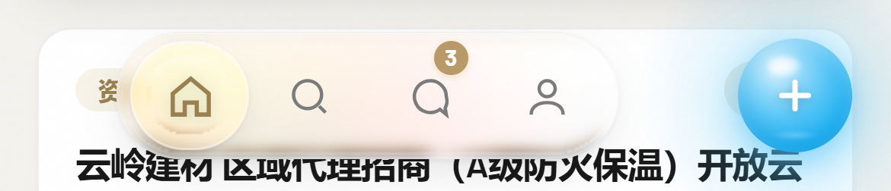
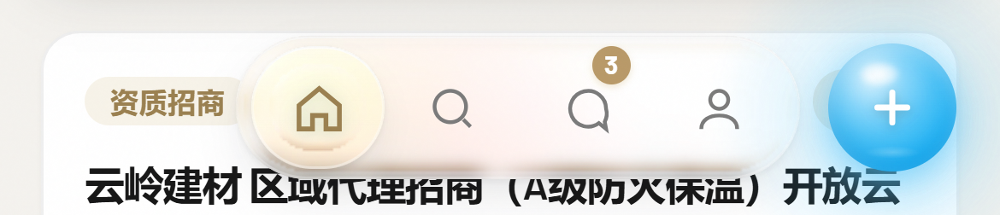
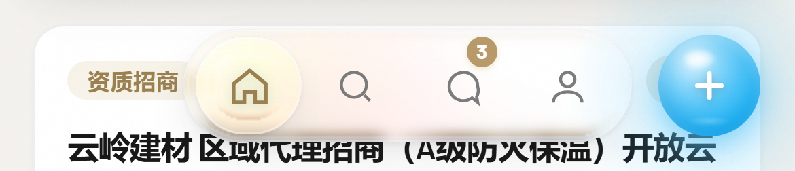
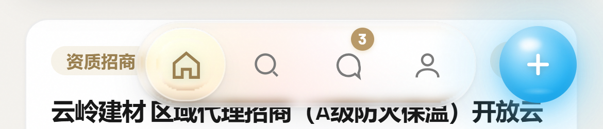
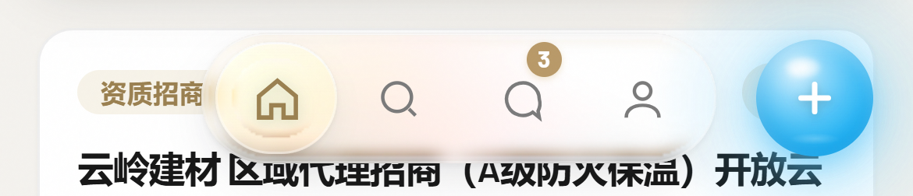

iPhone 390×844 · 3× · 同一裁切框（整条底栏全宽，含窗口左右边缘）





| 方案 | Dock 左 | Dock↔球 | 球右→窗口右 | 球 左/右 | Dock 宽 |
|---|---|---|---|---|---|
| 现状 | 51.0 | 47.0 | 12.0 | 318.0 / 378.0 | 220.0 |
| A 6px | 92.0 | 6.0 | 12.0 | 318.0 / 378.0 | 220.0 |
| B 8px（外壳原生 gap） | 90.0 | 8.0 | 12.0 | 318.0 / 378.0 | 220.0 |
| C 10px | 88.0 | 10.0 | 12.0 | 318.0 / 378.0 | 220.0 |
| D 12px（= 外边距） | 86.0 | 12.0 | 12.0 | 318.0 / 378.0 | 220.0 |
球到窗口右缘 12px 是 app.css 给外壳的 right:12px，本方案不碰外壳定位，所以每一行都恒为 12.0。
球的左/右边缘在 5 个方案里逐像素相同 —— 调间距只移动 Dock，球在数学上不可能被带动。